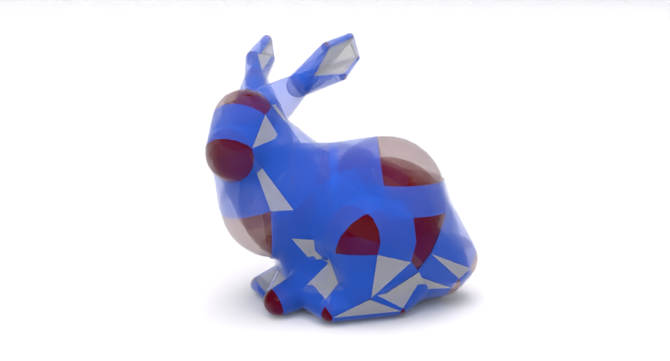
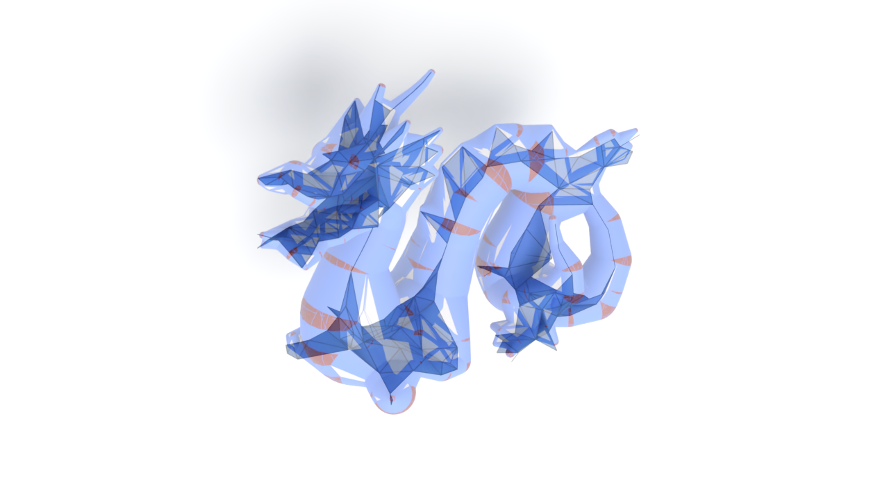

Vibrational Affine Body Dynamics
1University of Utah · 2LIGHTSPEED ·
3University of Southern California · 4École de technologie supérieure · 5University of California, Los Angeles
ACM SIGGRAPH Asia 2026
ACM SIGGRAPH Asia 2026
Abstract
Rigid-body and affine body dynamics are default simulation modalities for rigid or near-rigid objects. Their low-rank kinematic models inherently preclude vibrational responses that stiff bodies exhibit during abrupt impacts or contacts. Simulating such behavior with full or reduced finite element methods requires high spatial resolution and small time steps, significantly increasing the cost of system solves and collision handling. We propose vibrational affine body dynamics (VABD), a simulation framework that captures these missing high-frequency vibrations while preserving efficiency and robustness in complex scenarios. VABD augments standard affine body dynamics with a carefully constructed secondary vibration subspace that encodes high-frequency deformation on top of a time-varying affine frame while remaining orthogonal to the evolving affine subspace with respect to the system matrix. For collisions, VABD uses medial-axis proxies and interleaves medial continuous and discrete collision detection. A neural medial-axis-transform mapping couples reduced vibrational coordinates to medial primitives with well-defined derivatives. Finally, a Newton–quasi-Newton solver exploits slowly changing collision Hessians to avoid repeated construction while retaining strong second-order convergence. Experiments show realistic vibrational responses for stiff objects in intensive, extensive collisions, at orders-of-magnitude faster performance than FEM-based or reduced simulation approaches.
Gallery of Our Medial Proxies



Simulation results
VABDABD
VABDABD
VABDABD
VABDABD
VABDFEMModal derivatives
BibTeX
@article{shi2026vabd,
title={Vibrational Affine Body Dynamics},
author={Shi, Haoyang and He, Yumeng and Andrews, Sheldon and Jiang, Chenfanfu and Wu, Kui and Yang, Yin},
journal={ACM Trans. Graph.},
year={2026},
month=dec
}